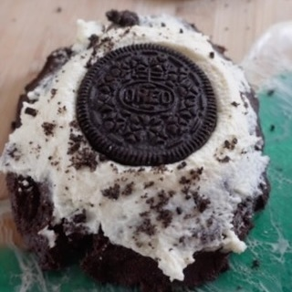

Galleta Oreo Chocolate Crumbl
Ingredientes:
- 1/2 taza de puré de calabaza
- 340 g de yogur griego sin grasa
- 3 cdas de harina de coco
- 1/2 taza de cacao en polvo
- 1 Scoop de Proteína en polvo de chocolate
- 1/4 taza de edulcorante
- 1 huevo
- 1 cucharadita de polvo de hornear
- 1 cucharadita de extracto de vainilla
- 2 cucharadas de leche de almendra
- 7g de mezcla para cheesecake sin azúcar
- 3 Oreo Thins
- 2 cucharadas de Cool Whip
Instrucciones:
- Precalienta el horno a 350°F (175°C). Prepara una bandeja para hornear con papel pergamino
- En un bol grande, mezcla el puré de calabaza, la harina de coco, el cacao en polvo, la proteína en
polvo de chocolate, el edulcorante, el huevo, el polvo de hornear, el extracto de vainilla y la
leche de almendra hasta obtener una masa suave
- Extiende la masa de manera uniforme sobre la bandeja para hornear preparada. Hornea durante
aproximadamente 11 minutos, o hasta que los bordes estén firmes
- Mientras se hornea la base, prepara la cobertura. En otro bol, combina 170g de yogur griego con la
mezcla para cheesecake sin azúcar hasta que esté bien mezclado
- Una vez que la base esté horneada y enfriada, extiende la mezcla de yogur y cheesecake de manera
uniforme sobre la parte superior
- Rompe las Oreo Thins en trozos más pequeños y espolvoréalos sobre la capa de yogur
- Termina colocando cucharadas de Cool Whip sobre los trozos de Oreo